China Employee Termination 2026: Pulse Priority-Filters Brief for Foreign Employers
Key takeaways
- Foreign employers can make faster and safer China termination decisions by applying fixed priority filters before action.
- The highest-value filters are: legal route fit, local interpretation stability, evidence coherence, payroll/tax closure, communication discipline, and archive readiness.
- Filter-based governance helps teams focus on what must be true now, not what can wait.
- City-level interpretation belongs in the top filter set, not a secondary note.
- This brief leads with practical decision value; legal depth is secondary in the appendix.
What changed and why this matters now
In high-volume periods, teams often drown in details and miss the few controls that actually change outcomes. A priority-filter model solves this by ranking controls by consequence. If a top filter fails, downstream work pauses; if it passes, teams move quickly without over-processing.
This run rotates to a priority-filters format (distinct from execution-lenses/checkpoints/questions/rubrics) to keep variation while retaining Pulse-style readability.
Plain-language legal context first
China employer-initiated termination generally requires a lawful statutory basis and coherent factual/process execution. Public legal anchors include the PRC Labor Contract Law framework, implementing regulation references (including Decree No. 535 context), and Supreme People’s Court labor-dispute interpretation materials. For non-local operators, the practical takeaway is simple: route legality and execution quality must align at every stage.
Priority filters operationalize this into a clear rule: high-impact controls first, everything else second.
Pulse priority filters (impact-first)
Filter A — Route Fit (highest priority)
Question: Does the chosen route match facts with a documented fallback?
Pass evidence: case-specific route memo + fallback path + owner sign-off.
Fail effect: immediate hold; no employee-facing progression.
Filter B — Local Stability
Question: Is city-level practical interpretation resolved for this route?
Pass evidence: local memo + resolved open points.
Fail effect: route remains provisional; hold on progression.
Filter C — Evidence Coherence
Question: Is chronology contradiction-free and source-owned?
Pass evidence: reconciled timeline ledger + contradiction closure notes.
Fail effect: remediation sprint required before communication prep.
Filter D — Payroll Closure
Question: Are final pay, severance, IIT/social handling, and payment workflow fully ready?
Pass evidence: approved payroll/tax pack + payment-proof workflow.
Fail effect: no-go on communication.
Filter E — Communication Discipline
Question: Is script control and spokesperson readiness fully locked?
Pass evidence: approved script + briefing record + deviation protocol.
Fail effect: meeting scheduling blocked.
Filter F — Closure Resilience
Question: Can the case be reconstructed quickly if challenged?
Pass evidence: indexed archive + retrieval test pass.
Fail effect: case cannot be closed.
Priority filter table
| Filter | Priority rank | Owner | SLA | Block if failed |
|---|---|---|---|---|
| Route fit | 1 | Legal lead | 24h | Yes |
| Local stability | 2 | Local counsel coordinator | 48h | Yes |
| Evidence coherence | 3 | HR Ops + Compliance | 24-48h | Yes |
| Payroll closure | 4 | Payroll + Tax | Same day | Yes |
| Communication discipline | 5 | HR lead | Same day | Yes |
| Closure resilience | 6 | Compliance + Records | 1 business day | Close only |
Why this helps foreign employers
Priority filters reduce decision fatigue. Teams know which issues can stop a case immediately and which can be handled later. This is especially useful for HQ teams managing multiple China matters with limited local context.
Practical scenarios
Scenario 1: Route and evidence look strong, local guidance uncertain
National references appear clear but city-level advice conflicts.
Filter outcome: Filter B fail keeps case on hold.
Scenario 2: Payroll closure not complete before communication pressure
Business requests immediate schedule despite unresolved IIT mapping.
Filter outcome: Filter D fail overrides timeline pressure.
Scenario 3: Late contradiction appears in chronology
A manager update conflicts with earlier documentation.
Filter outcome: Filter C reopens and blocks progression.
Role-owned SOP (filter governance)
Step 1 — Assign filter owners and backups
Owners: HRBP + Legal + Payroll lead
- Define owner/backups, SLAs, and escalation path.
Step 2 — Run filter checks before transitions
Owners: filter owners
- Mark pass/fail/open with linked evidence.
Step 3 — Enforce filter-fail blocks
Owners: cross-functional panel
- Prevent downstream actions when critical filters fail.
Step 4 — Publish filter status note
Owners: HR + Legal + Payroll
- Document current status, blockers, and remediation owners.
Step 5 — Review filter failure patterns
Owners: operations governance + compliance
- Analyze repeated failures and improve control design.
Required document checklist
- Employee profile and contract context
- Route rationale memo + fallback route
- City-level interpretation memo
- Chronology/source ledger
- Script package and briefing records
- Payroll/severance/IIT/social worksheet
- Settlement/acknowledgment records
- Payment proof artifacts
- Priority-filter status log
- Closure memo + archive index
Exception handling playbook
- Conflicting pass/fail views: issue evidence-based tie-break memo.
- New fact invalidates pass: reopen affected filter immediately.
- Owner unavailable: activate backup and preserve SLA.
- Deadline override attempt: disclose unresolved failed filters and formal risk acceptance.
- Recurring fail in one filter: launch targeted process redesign.
System implementation notes
- Add filter-state fields (pass/fail/open) with evidence links.
- Auto-block downstream tasks on failed high-priority filters.
- Track KPIs: fail rate by filter, time-to-pass, dispute correlation.
- Keep audit history for filter status changes.
- Recalibrate priority logic monthly.
Common mistakes and prevention
- Mistake: treating all controls as equal priority.
Prevention: enforce ranked filter order.
- Mistake: local stability assessed too late.
Prevention: hard Filter B gate.
- Mistake: payroll closure deferred.
Prevention: hard Filter D pre-communication gate.
- Mistake: communication assumed ready.
Prevention: explicit Filter E evidence requirement.
- Mistake: weak closeout readiness.
Prevention: Filter F retrieval test.
What to do now
- Deploy six priority filters for all active China termination cases.
- Assign owners/backups and SLAs per filter.
- Enforce fail-block rules for Filters A-D.
- Add filter checks before every major transition.
- Publish daily filter status notes across functions.
- Train managers on communication filter requirements.
- Use filter-failure analytics to tighten controls.
What to watch next
- City-level changes may increase Filter B volatility.
- Case surges may stress Filter D payroll closure performance.
- Practitioner updates may tighten Filter C evidence expectations.
FAQ
1) Why priority filters instead of one big checklist?
Filters focus attention on the controls that most affect outcome risk.
2) Can one failed filter block progression?
Yes, especially Filters A-D.
3) How often should filters be reviewed?
Before each major transition and after any material fact change.
4) Who approves final go/hold?
Cross-functional HR, legal, and payroll leads.
5) Is local interpretation always required?
Yes, because city-level practice can materially affect defensibility.
6) What is the top avoidable failure?
Proceeding while payroll or evidence filters are failed.
7) How does this improve over time?
By tracking recurring failed filters and fixing root causes.
Legal depth appendix (secondary)
This brief is grounded in official/legal and practitioner materials relevant to employer-side termination operations in China. Core anchors include the PRC Labor Contract Law framework, implementing regulation references associated with Decree No. 535 context, and Supreme People’s Court labor-dispute interpretation materials. Practitioner and payroll-context sources provide practical interpretation for foreign employers. Residual uncertainty remains city- and fact-specific and should be validated with localized professional review for live matters.
Disclaimer
This content is informational only and does not constitute legal, tax, or employment advice.
Sources
- National People’s Congress (Labor Contract Law, English text), accessed 2026-03-06: http://www.npc.gov.cn/zgrdw/englishnpc/Law/2007-12/13/content_1384064.htm
- State Council Gazette reference (implementing regulation / Decree No. 535 context), accessed 2026-03-06: https://www.gov.cn/gongbao/content/2008/content_1124615.htm
- Supreme People’s Court labor dispute interpretation update page, accessed 2026-03-06: https://www.court.gov.cn/fabu/xiangqing/243981.html
- China Briefing, Employee Termination in China, accessed 2026-03-06: https://www.china-briefing.com/news/employee-termination-in-china/
- ICLG Employment & Labour Laws and Regulations: China, accessed 2026-03-06: https://iclg.com/practice-areas/employment-and-labour-laws-and-regulations/china
- Littler ASAP analysis on China employment law developments, accessed 2026-03-06: https://www.littler.com/news-analysis/asap/key-recent-developments-chinas-employment-law-china-us-comparative-perspective
- PwC PRC Individual Income Tax summary, accessed 2026-03-06: https://taxsummaries.pwc.com/peoples-republic-of-china/individual/taxes-on-personal-income
Need local employment support in China?
If you need a compliance-first partner for hiring, payroll, and risk controls in China, China-Payroll.com can help evaluate the right setup.
Image Prompt Pack
Create a 16:9 hero image for article title: 'China Employee Termination 2026: Pulse Priority-Filters Brief for Foreign Employers'. Scene: global operations team evaluating workforce model options for China market entry. Include motifs: decision matrix, org cha…